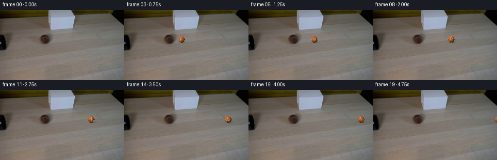
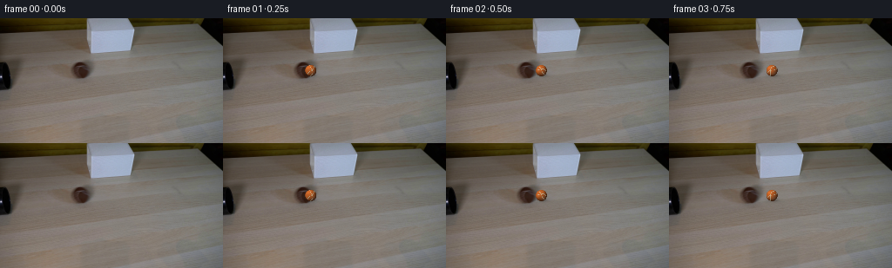

CODING AGENTS AS PIXEL WORLD MODELS
traex/DeepSeek-V4.1-Flash · 0148
点击播放 · 原生 RGB 像素
逐轮保存的候选
回放视频、检查图与代码变化。
每份候选均可单独播放。实际图片检查记录在下方工具轨迹中。
候选 01播放与检查图
点击播放 · 原生 RGB 像素

展开代码变化
--- 上一保存版本
+++ 本次保存版本
@@ -0,0 +1,153 @@
+from pathlib import Path
+
+import numpy as np
+from PIL import Image, ImageFilter
+
+import artifact_io
+
+
+CASE_DIR = Path(__file__).resolve().parent
+FRAME_COUNT = 20
+FPS = 4
+WIDTH = 256
+HEIGHT = 144
+
+
+def _smoothstep(edge0, edge1, value):
+ x = np.clip((value - edge0) / (edge1 - edge0), 0.0, 1.0)
+ return x * x * (3.0 - 2.0 * x)
+
+
+def _felt_noise(u, v, scale=38.0):
+ """Deterministic, softly fibrous texture in rotating ball coordinates."""
+ a = np.sin((u * 71.3 + v * 39.7) * scale)
+ b = np.sin((u * 37.1 - v * 83.9) * scale + 1.7)
+ c = np.sin((u * 113.0 + v * 17.0) * scale + 0.4)
+ return 0.46 * a + 0.32 * b + 0.22 * c
+
+
+def _render_shadow(background, cx, cy, radius):
+ """Composite a soft table shadow while preserving the photographed grain."""
+ x0 = max(0, int(np.floor(cx - radius * 2.5)))
+ x1 = min(WIDTH, int(np.ceil(cx + radius * 3.7)))
+ y0 = max(0, int(np.floor(cy - radius * 0.4)))
+ y1 = min(HEIGHT, int(np.ceil(cy + radius * 2.2)))
+ if x0 >= x1 or y0 >= y1:
+ return background
+
+ yy, xx = np.mgrid[y0:y1, x0:x1].astype(np.float32)
+ dx = xx - (cx + radius * 0.18)
+ dy = yy - (cy + radius * 0.76)
+
+ broad = np.exp(-1.8 * ((dx / (radius * 1.45)) ** 2 + (dy / (radius * 0.50)) ** 2))
+ contact = np.exp(-2.8 * ((dx / (radius * 0.92)) ** 2 + (dy / (radius * 0.24)) ** 2))
+ alpha = np.clip(0.25 * broad + 0.31 * contact, 0.0, 0.46)
+
+ patch = background[y0:y1, x0:x1].astype(np.float32)
+ shadow_color = np.array([69.0, 51.0, 38.0], dtype=np.float32)
+ shaded = patch * (1.0 - alpha[..., None]) + shadow_color * alpha[..., None]
+ result = background.copy()
+ result[y0:y1, x0:x1] = np.clip(shaded + 0.5, 0, 255).astype(np.uint8)
+ return result
+
+
+def _render_ball(background, cx, cy, radius, roll_angle):
+ """Render an antialiased, felt-textured sphere into the static plate."""
+ pad = 2
+ x0 = max(0, int(np.floor(cx - radius)) - pad)
+ x1 = min(WIDTH, int(np.ceil(cx + radius)) + pad)
+ y0 = max(0, int(np.floor(cy - radius)) - pad)
+ y1 = min(HEIGHT, int(np.ceil(cy + radius)) + pad)
+ if x0 >= x1 or y0 >= y1:
+ return background
+
+ yy, xx = np.mgrid[y0:y1, x0:x1].astype(np.float32)
+ nx = (xx + 0.5 - cx) / radius
+ ny = (yy + 0.5 - cy) / radius
+ radial2 = nx * nx + ny * ny
+ inside = radial2 < 1.0
+ nz = np.sqrt(np.clip(1.0 - radial2, 0.0, 1.0))
+
+ # Rotate the surface texture clockwise as the ball rolls to the right.
+ c = np.cos(roll_angle)
+ s = np.sin(roll_angle)
+ u = c * nx - s * ny
+ v = s * nx + c * ny
+
+ # Broad felt mottling and fine nap.
+ mottling = (
+ 0.030 * np.sin(5.2 * u + 2.7 * v)
+ + 0.021 * np.sin(9.1 * u - 7.4 * v + 0.8)
+ + 0.013 * _felt_noise(u, v)
+ )
+
+ # A pair of softly curved tennis-ball seams.
+ seam1 = np.abs(v - 0.39 * np.sin(2.25 * u + 0.15))
+ seam2 = np.abs(v + 0.43 * np.sin(2.10 * u - 0.80))
+ seam_distance = np.minimum(seam1, seam2)
+ seam = 1.0 - _smoothstep(0.025, 0.075, seam_distance)
+ seam *= _smoothstep(0.02, 0.23, nz)
+
+ # Warm key light from the upper left, with a narrow reflected highlight.
+ light = np.array([-0.48, -0.60, 0.64], dtype=np.float32)
+ light /= np.linalg.norm(light)
+ diffuse = np.clip(nx * light[0] + ny * light[1] + nz * light[2], 0.0, 1.0)
+ wrap = np.clip((nx * light[0] + ny * light[1] + nz * light[2] + 0.32) / 1.32, 0.0, 1.0)
+ rim = np.clip(1.0 - nz, 0.0, 1.0) ** 2
+
+ base = np.array([128.0, 73.0, 35.0], dtype=np.float32)
+ warm_light = np.array([1.20, 1.07, 0.87], dtype=np.float32)
+ ambient = np.array([0.44, 0.40, 0.38], dtype=np.float32)
+ illumination = ambient + (0.72 * wrap + 0.30 * diffuse)[..., None] * warm_light
+ color = base[None, None, :] * illumination
+ color *= (1.0 + mottling)[..., None]
+ color *= (1.0 - 0.13 * rim)[..., None]
+
+ seam_color = np.array([190.0, 170.0, 137.0], dtype=np.float32)
+ seam_lit = seam_color[None, None, :] * (0.55 + 0.56 * wrap[..., None])
+ color = color * (1.0 - seam[..., None]) + seam_lit * seam[..., None]
+
+ hx = nx + 0.44
+ hy = ny + 0.50
+ hz = nz + 0.74
+ hlen = np.sqrt(hx * hx + hy * hy + hz * hz) + 1e-6
+ specular = np.clip((nx * hx + ny * hy + nz * hz) / hlen, 0.0, 1.0) ** 36
+ color += (20.0 * specular)[..., None]
+
+ coverage = np.clip((1.0 - np.sqrt(radial2)) * radius + 0.55, 0.0, 1.0)
+ coverage *= inside
+ alpha = coverage[..., None]
+
+ patch = background[y0:y1, x0:x1].astype(np.float32)
+ composited = patch * (1.0 - alpha) + color * alpha
+ result = background.copy()
+ result[y0:y1, x0:x1] = np.clip(composited + 0.5, 0, 255).astype(np.uint8)
+ return result
+
+
+def generate():
+ first = np.asarray(Image.open(CASE_DIR / "first_frame.png").convert("RGB"), dtype=np.uint8)
+ assert first.shape == (HEIGHT, WIDTH, 3)
+
+ frames = np.empty((FRAME_COUNT, HEIGHT, WIDTH, 3), dtype=np.uint8)
+ frames[0] = first
+
+ start_x = 92.0
+ start_y = 60.4
+ radius = 6.55
+ step_x = 8.75
+ for index in range(1, FRAME_COUNT):
+ cx = start_x + step_x * index
+ cy = start_y + 0.006 * index
+ roll_angle = (cx - start_x) / radius
+ frame = _render_shadow(first, cx, cy, radius)
+ frame = _render_ball(frame, cx, cy, radius, roll_angle)
+ frames[index] = frame
+
+ assert np.array_equal(frames[0], first)
+ artifact_io.save(frames, CASE_DIR)
+ return frames
+
+
+if __name__ == "__main__":
+ generate()
候选 02播放与检查图
点击播放 · 原生 RGB 像素

展开代码变化
--- 上一保存版本
+++ 本次保存版本
@@ -44,8 +44,8 @@
alpha = np.clip(0.25 * broad + 0.31 * contact, 0.0, 0.46)
patch = background[y0:y1, x0:x1].astype(np.float32)
- shadow_color = np.array([69.0, 51.0, 38.0], dtype=np.float32)
- shaded = patch * (1.0 - alpha[..., None]) + shadow_color * alpha[..., None]
+ # Multiply rather than blend, so a shadow can never brighten the dark tube.
+ shaded = patch * (1.0 - 0.64 * alpha[..., None])
result = background.copy()
result[y0:y1, x0:x1] = np.clip(shaded + 0.5, 0, 255).astype(np.uint8)
return result
@@ -79,6 +79,7 @@
0.030 * np.sin(5.2 * u + 2.7 * v)
+ 0.021 * np.sin(9.1 * u - 7.4 * v + 0.8)
+ 0.013 * _felt_noise(u, v)
+ + 0.004 * np.sin((u * 157.0 - v * 191.0) + 0.3)
)
# A pair of softly curved tennis-ball seams.
可观测工具轨迹
实际执行的命令与返回图片。
命令 1exit 0
/bin/bash -c "pwd && rg --files -g '"'!*.pyc'"' | sort"
命令 2exit 0
/bin/bash -c "sed -n '1,240p' prompt.txt"
命令 3exit 0
/bin/bash -c "sed -n '1,280p' GENERATION_RULES.md"
命令 4exit 0
/bin/bash -c "file first_frame.png 2>/dev/null; identify first_frame.png 2>/dev/null || true; find . -maxdepth 2 -type f -printf '%p %s bytes\\n' | sort"
命令 5exit 0
/bin/bash -c "sed -n '1,260p' artifact_io.py"
命令 6exit 0
/bin/bash -c "sed -n '1,260p' player_template.html"
命令 7exit 0
/bin/bash -c "python - <<'PY'
from PIL import Image
import numpy as np
im=Image.open('first_frame.png').convert('RGB')
a=np.array(im)
print(im.size, a.shape, a.dtype)
print('global min/max/mean/std',a.min((0,1)),a.max((0,1)),a.mean((0,1)),a.std((0,1)))
# quantized common colors
q=(a//16)*16
colors,counts=np.unique(q.reshape(-1,3),axis=0,return_counts=True)
for c,n in sorted(zip(colors.tolist(),counts.tolist()), key=lambda x:-x[1])[:30]: print(c,n)
# row and col mean / std highlights
for y in range(0,144,8): print('row',y, 'mean', np.round(a[y].mean(0),1), 'std',np.round(a[y].std(0),1))
PY"命令 8exit 0
/bin/bash -c "python - <<'PY'
from PIL import Image
import numpy as np
a=np.array(Image.open('first_frame.png').convert('RGB')).astype(float)
# 2x2 downsample to 128x72, assign symbols by hue/lightness/saturation
h,w,_=a.shape
for by in range(0,h,4):
row=''
for bx in range(0,w,4):
p=a[by:by+4,bx:bx+4].mean((0,1))
r,g,b=p
mx=p.max(); mn=p.min(); sat=(mx-mn)/(mx+1e-6)
lum=p.mean()
if lum<15: c=' '
elif sat<.06:
c='@' if lum>175 else 'O' if lum>130 else 'o' if lum>90 else '.' if lum>50 else ','
elif r>g*1.2 and g>b*1.15:
c='Y' if lum>120 else 'y' if lum>75 else 'b'
elif r>g*1.12 and g>b*1.05:
c='T' if lum>120 else 't'
elif b>r*1.08:
c='B' if lum>130 else 'c'
elif g>r*1.05:
c='G'
else:
c='?'
row+=c
print(f'{by:03d} {row}')
PY"命令 9exit 0
/bin/bash -c "python - <<'PY'
from PIL import Image
import numpy as np
a=np.array(Image.open('first_frame.png').convert('RGB')).astype(float)
# luminance ascii at 2x2 using 10 levels
chars=' .,:;irsXA253hMHGS#9B&@'
lum=a@np.array([.2126,.7152,.0722])
for y in range(0,144,2):
s=''
for x in range(0,256,2):
v=lum[y:y+2,x:x+2].mean()
s+=chars[min(len(chars)-1,int(v/256*len(chars)))]
print(f'{y:03d} {s}')
PY"命令 10exit 0
/bin/bash -c "python - <<'PY'
from PIL import Image
import numpy as np
from scipy import ndimage
a=np.array(Image.open('first_frame.png').convert('RGB')).astype(float)
lum=a@np.array([.2126,.7152,.0722])
for t in [15,25,35,45,55,65,80,100]:
m=lum<t
lab,n=ndimage.label(m)
comps=[]
for i in range(1,n+1):
ys,xs=np.where(lab==i); s=len(xs)
if s>=10: comps.append((s,xs.min(),xs.max(),ys.min(),ys.max()))
print('threshold',t,'pixels',m.sum(),'components',sorted(comps,reverse=True)[:15])
PY"命令 11exit 0
/bin/bash -c "python - <<'PY'
from PIL import Image
import numpy as np
a=np.array(Image.open('first_frame.png').convert('RGB'))
# print pixel rows in strategic regions with run-length colors rounded to 8
for y in [40,42,44,46,48,50,52,54,56,58,60,62,64,66,68,70,72,74,76,78,80,82,84,86,88]:
p=(a[y]//8)*8
# runs >= 4
runs=[]; st=0; last=tuple(p[0])
for x in range(1,256):
cur=tuple(p[x])
if cur"'!=last:
if x-st>=4:runs.append((st,x-1,last))
st=x;last=cur
if 256-st>=4:runs.append((st,255,last))
print(y, runs[:18])
PY'命令 12exit 0
/bin/bash -c "python - <<'PY'
from PIL import Image
import numpy as np
from scipy import ndimage
a=np.array(Image.open('first_frame.png').convert('RGB')).astype(float)
lum=a@np.array([.2126,.7152,.0722])
# local contrast: lum minus median blur
med=ndimage.median_filter(lum,size=(11,11))
d=lum-med
for t in [3,4,5,6,8,10]:
m=(d<-t)&(lum<145)
# horizontal closing to join tube
m2=ndimage.binary_closing(m,structure=np.ones((1,5)))
lab,n=ndimage.label(m2)
comps=[]
for i in range(1,n+1):
ys,xs=np.where(lab==i); s=len(xs)
if s>=15: comps.append((s,xs.min(),xs.max(),ys.min(),ys.max()))
print('t',t, sorted(comps,reverse=True)[:20])
# sample colors around likely tube y 52-64 x 0-120
for y in [52,54,56,58,60,62,64,66,68]:
print('\\ny',y)
for x in range(0,121,5):
p=a[y,x].astype(int)
print(f'{x:3}:{p[0]:3},{p[1]:3},{p[2]:3}',end=' ')
print()
PY"命令 13exit 0
/bin/bash -c "python - <<'PY'
from PIL import Image
import numpy as np
from scipy import ndimage
a=np.array(Image.open('first_frame.png').convert('RGB')).astype(float)
lum=a@np.array([.2126,.7152,.0722])
# gradient components
gx=ndimage.sobel(lum,axis=1); gy=ndimage.sobel(lum,axis=0)
g=np.hypot(gx,gy)
for t in [80,120,160,200,250,300,400]:
m=g>t
lab,n=ndimage.label(m,structure=np.ones((3,3)))
comps=[]
for i in range(1,n+1):
ys,xs=np.where(lab==i); s=len(xs)
if s>=12: comps.append((s,xs.min(),xs.max(),ys.min(),ys.max()))
print('\\nt',t,sorted(comps,reverse=True)[:20])
# luminance row median/max at columns etc
PY"命令 14exit 0
/bin/bash -c "python - <<'PY'
from PIL import Image
import numpy as np
from scipy import ndimage
a=np.array(Image.open('first_frame.png').convert('RGB')).astype(float)
lum=a@np.array([.2126,.7152,.0722])
# region map values: dark absolute D, brown shadow b, wood w, etc
for y in range(38,85):
s=''
for x in range(55,130):
r,g,b=a[y,x]; l=lum[y,x]
if l<20: c='#'
elif l<40: c='@'
elif l<60: c='O'
elif l<75: c='o'
elif l<90: c='x'
elif l<105: c='s'
elif l<120: c=':'
elif l<135: c='.'
else: c=' '
s+=c
print(f'{y:03d} {s}')
print('left')
for y in range(40,90):
s=''
for x in range(0,30):
l=lum[y,x]
if l<10:c='#'
elif l<20:c='@'
elif l<30:c='O'
elif l<45:c='o'
elif l<60:c='x'
elif l<80:c='s'
elif l<100:c=':'
elif l<120:c='.'
else:c=' '
s+=c
print(f'{y:03d} {s}')
PY"命令 15exit 0
/bin/bash -c 'python generate.py'
命令 16exit 0
/bin/bash -c "python - <<'PY'
from PIL import Image
import numpy as np
im=Image.open('inspection.png')
print(im.size)
# stats and diff
f=np.array([np.array(Image.open(f'frames/{i:02d}.png')) for i in range(20)])
a=np.array(Image.open('first_frame.png'))
print('shape',f.shape,'frame0 identical',np.array_equal(f[0],a))
for i in range(20):
d=np.abs(f[i].astype(int)-a.astype(int)).max(2)>2
ys,xs=np.where(d)
print(i, int(d.sum()), (xs.min(),xs.max(),ys.min(),ys.max()) if len(xs) else None)
PY"命令 17exit 0
/bin/bash -c "python - <<'PY'
from PIL import Image
import numpy as np
im=Image.open('inspection.png').crop((0,0,1024,330))
# Extract bottom row frames 04..07 and upscale to make texture/path check
row=im.crop((0,165,1024,330))
row.resize((1536,248),Image.Resampling.NEAREST).save('.tmp/inspection_large.png')
PY"命令 18exit 0
/bin/bash -c "python - <<'PY'
from PIL import Image
import numpy as np
# Print color matrices around ball for representative frame
for fi in [1,8,15]:
a=np.array(Image.open(f'frames/{fi:02d}.png'))
cx=92+8.75*fi; cy=60.4+.006*fi
x0=int(cx-8);x1=int(cx+9); y0=int(cy-8);y1=int(cy+9)
print('\\nframe',fi,'center',cx,cy)
for y in range(y0,y1):
print(y,' '.join(f'{a[y,x,0]:02x}{a[y,x,1]:02x}{a[y,x,2]:02x}' for x in range(x0,x1)))
PY"命令 19exit 0
/bin/bash -c "python generate.py && python - <<'PY'
from pathlib import Path
from PIL import Image
import numpy as np
import json
frames=np.stack([np.asarray(Image.open(p).convert('RGB')) for p in sorted(Path('frames').glob('*.png'))])
first=np.asarray(Image.open('first_frame.png').convert('RGB'))
print('frames', frames.shape, frames.dtype)
print('frame0_identical', np.array_equal(frames[0], first))
print('frame1_not_identical', not np.array_equal(frames[1], first))
print('frame_range', int(frames.min()), int(frames.max()))
print('pixels', np.load('pixels.npz')['pixels'].shape)
print('html_bytes', Path('index.html').stat().st_size)
# Motion diagnostics from changed region against plate, excluding shadow by RGB distance.
for i in range(1,20):
diff=np.max(np.abs(frames[i].astype(np.int16)-first.astype(np.int16)),axis=2)
ys,xs=np.where(diff>18)
print(f'{i:02d}: changed={len(xs):3d} bbox=({xs.min():3d},{ys.min():2d})-({xs.max():3d},{ys.max():2d})')
PY"保存候选 2 份；完成命令 19 次；可验证图片返回 0 张。原始 API 响应与完整日志保留在本地。